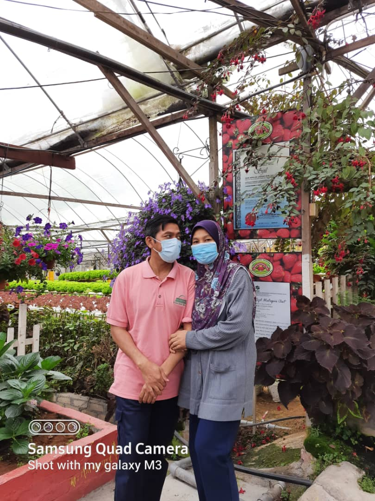
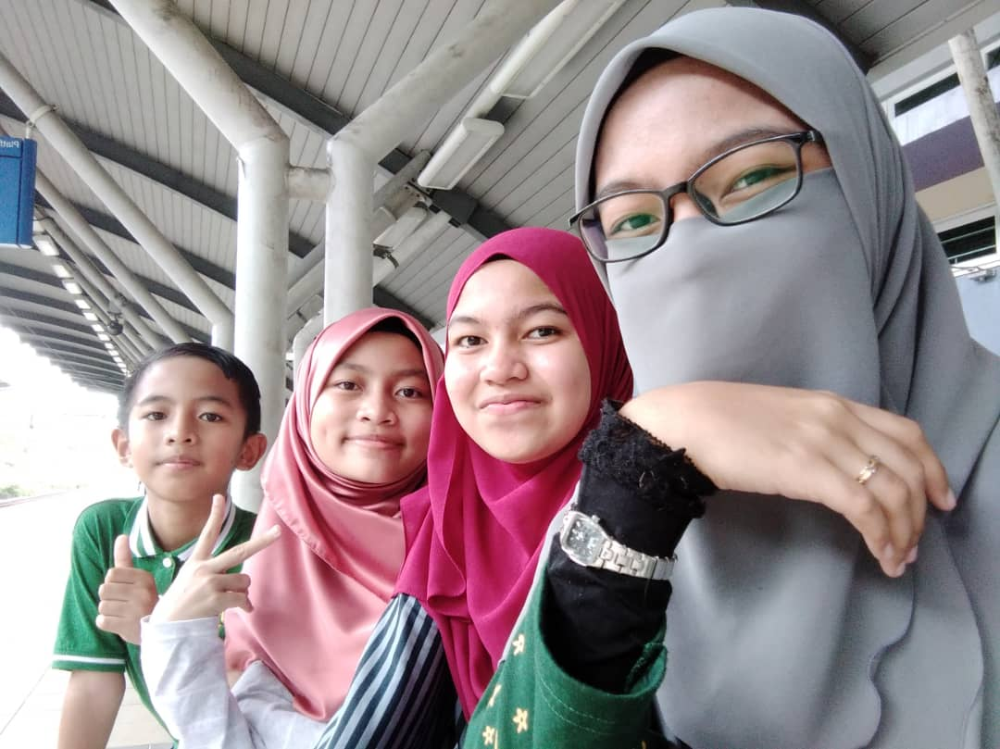
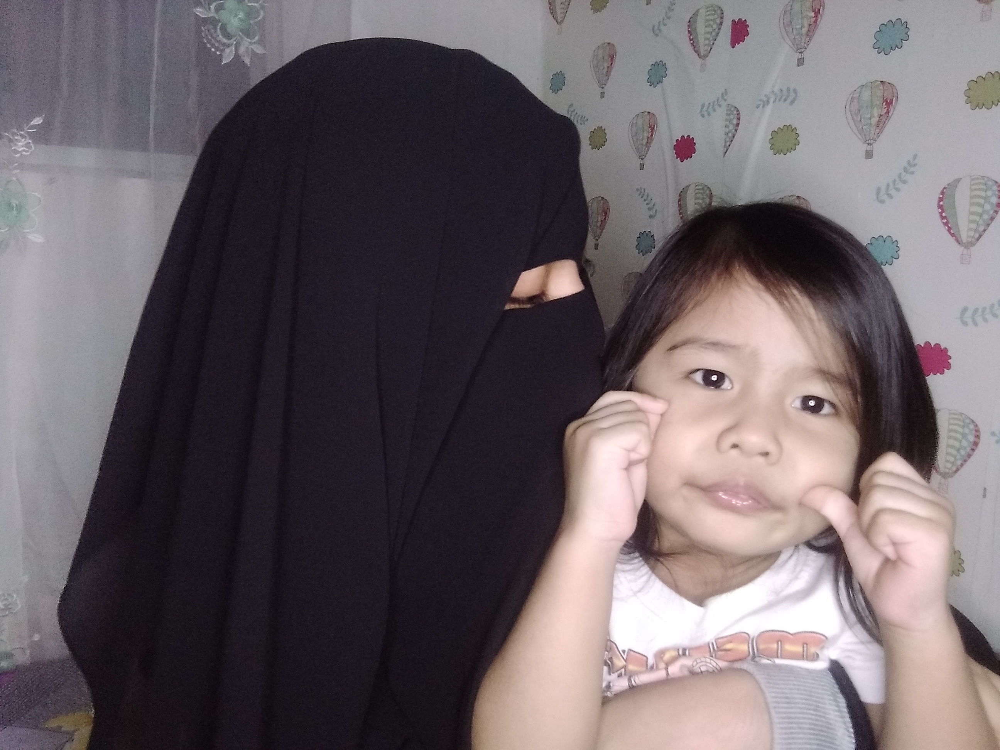
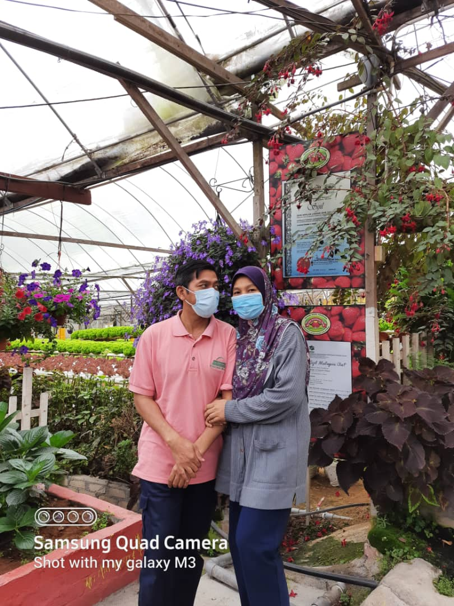
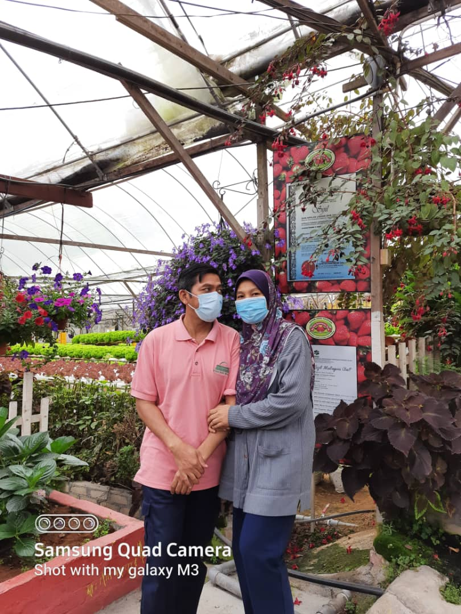

Family is always a number one priority and very important to my life. They are my first school and their teaching has strenghtened my bond with them and their love makes me feel good always. Family plays a very important role in my life and with the help of the love I receive from them helps shape my personality.

Starting from the biodata of my mother and father, my father's name is Muhammad bin Deraman, my father's age is 48. My father's job is to drive an office vehicle and my mother's name is Rosmaziah binti Mahmood, my mother's age is 40. My mother is not working and she is a housewife.
 
I have 5 siblings and I have four sisters and one brother. Of the five siblings, I am the eldest sister. My younger sister is 18 years old and she is continuing her studies at UiTM Lendu, Melaka. The third sister is also a 15 years old girl who is studying at the Sekolah Agama Menengah Tinggi Kuala Kubu Baharu. The fourth brother is an 11 year old brother who is still in school at Sekolah Rendah Kebangsaan Bukit Beruntung 2 and Sekolah Rendah Agama Bukit Sentosa Fasa 1. And finally, the younger sister is 3 years old.
 
